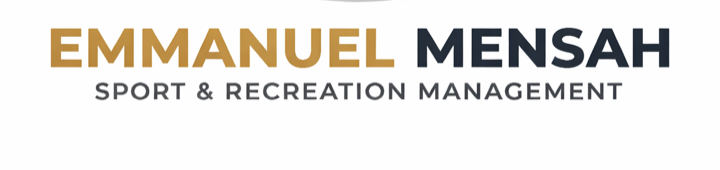

Iowa Hawkeye Athletics
College athletics data analytics, technology support, asset management, and operations.


Sport / Research / Data / Impact
Exploring the intersection of college athletics, research, data analytics, global sport, and student-athlete development through projects, experiences, and ideas focused on creating meaningful impact through sport.
About
My portfolio brings together the work, conferences, research interests, and professional experiences shaping my journey in sport management. I am building my path around student-athlete development, collegiate athletics, sport data, mental health and well-being, youth sport, sport governance, and international sport.
Organizations
College athletics data analytics, technology support, asset management, and operations.
Graduate teaching, Sport & Recreation Management, research, and campus leadership.
Graduate Student Senator representing student voices and shared governance.
McLendon Scholar in a national sport leadership development network.
Scholar and mentee within a sport sociology research and mentorship community.
Assistant Protocol Officer and Research Associate in sport policy and development.
Executive assistance, logistics coordination, and international event operations.
Founder of a youth sport initiative focused on education and community opportunity.
Protocol, logistics, and coordination experience across a 54-nation multisport event.
Research, operations, and sport-development experience in adaptive sport contexts.
Youth engagement connected to football, mental health, well-being, and global sport impact.
Personal Guide
Curated from the portfolio profile
My story moves from Ghana to global sport, research, Division I athletics, and data. I am focused on using sport to create opportunity, strengthen systems, and improve the student-athlete experience.
Selected Work
I work with Iowa Hawkeyes Athletics on data analytics, technology support, asset and data management, and systems that help a Division I athletic department operate with better information.
Discuss WorkMy research explores institutional career-development support, university belonging, and career readiness among NCAA Division I international student-athletes.
Discuss ProjectI am examining school-based athlete transition failure and the economic consequences connected to football, athletics development, and youth sport pathways in Ghana.
Discuss ProjectProfessional experience supporting one of Africa's largest multisport events, including protocol, logistics, and coordination across international delegations.
View ExperienceA youth sport initiative centered on education, development, community opportunity, and the role sport can play in building futures.
Discuss ProjectThis space is reserved for new projects, pictures, reports, dashboards, or sport-development work I will add as my portfolio grows.
Discuss ProjectConferences Attended
This space highlights my recent UN-related experience and the global conversations connecting football, youth, mental health, well-being, and sport impact.
My McLendon experience connects me to a national sport leadership network focused on professional growth, mentorship, and future leadership in athletics.
I supported protocol, logistics, ceremonies, and coordination for a major multisport event involving 54 African nations.
I coordinated volunteers across transportation, venue management, ceremonies, and team liaison duties in Ghana.
This space is reserved for upcoming conferences, professional meetings, and photos I will add later.
Experience
I support data analytics, asset management, workforce analytics, IT operations, and technology systems within NCAA Division I athletics.
I deliver lectures, facilitate discussions, mentor students, evaluate assignments, and support instruction in Contemporary Issues in Sports.
I represent graduate students in Health, Sport & Human Physiology and participate in shared governance, policy conversations, and student-centered initiatives.
I am developing within national sport leadership and research networks committed to mentorship, professional growth, and future industry impact.
I supported sport policy, protocol operations, venue readiness, national team logistics, AFCON 2024 travel coordination, African Para Games research, and youth sport outreach.
I managed communications, scheduling, partnerships, and logistics work connected to African sport investment and grassroots sport development.
Research & Tools
Student-athlete mental health and well-being · Mental-health literacy · International sport · Youth sport · Sport governance · Collegiate athletics
Data analytics · Microsoft Excel · Data visualization · Dashboard development · Asset/data management · IT operations · Sport finance
College athletics · Student-athlete development · Career readiness · Sport marketing · Sport policy · Event operations · Global sport
Expertise
Student-athlete development, career readiness, and systems that support life after sport.
Research communication, sport policy, international student-athlete experience, and academic inquiry.
Data-informed decision support, dashboards, workforce analytics, and athletic operations insight.
International sport, event operations, cross-cultural communication, and sport diplomacy.
Sport for social impact, education, community pathways, and opportunity creation through sport.
Project management, public speaking, stakeholder engagement, and research translation.
Contact
Iowa City, Iowa, USA · Originally from Ghana